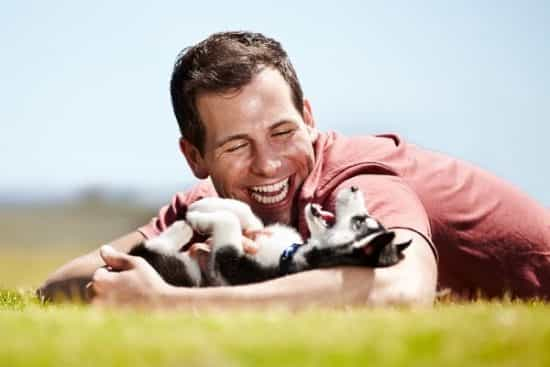
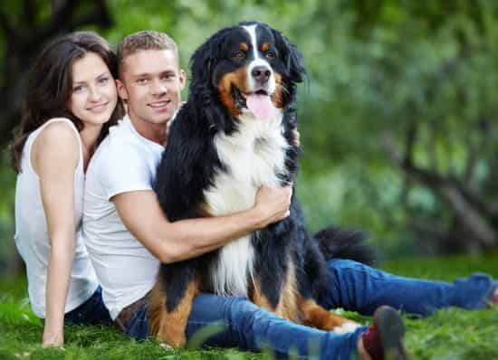
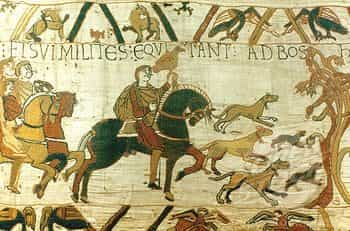

The manosphere has ruthlessly dedicated itself to bettering the well-being of men, grounding them in civilizational roots, and landing worthy women for dating, mating, and marriage. One of the easiest and simplest boosts to those objectives has been sitting under our nose: a dog.
Mark Twain famously wrote, “If you pick up a starving dog and make him prosperous, he will not bite you. This is the principal difference between a dog and a man.” This famous quote would have been even more portentous for the Current Year if he had substituted “woman” for “man.”
It turns out that caring for a dog can improve a man’s physical health, mental health, and boost relationships. Not to mention that any self-respecting king would have had a hound or two lounging about his throne room.
An exercise buddy who is never hung over.
Dogs Make You Healthier
Multiple studies have found that owning a dog improves your cardiovascular health. Whether you’re finding it difficult to get the exercise you need or you balk at gym fees, just taking a dog outside to walk gives you a boost in the moderate walking paces that researchers say is equivalent to jogging.
While power-lifting and intense workouts have their place, general moderate mobility burns plenty of calories. This is one reason European women tend to be more slender than their American counterparts—they walk more. Even if you are doing intense workouts in the gym, additional exercise will bring additional benefits—pet owners make less excuses for weather they might normally stay indoors for.
I’ve not found bench-pressing to be a good day game topic, but walking your dog after the gym gets you out in the field with a built in conversation starter. Studies have found that men who sleep better have higher testosterone and, lo and behold, according to the Mayo Clinic, a dog sleeping on the floor of your bedroom will improve sleep quality.

Who wouldn’t want to be this guy right now?
Dogs Make You Happier
Part of the red pill life is a ZFG (zero fucks given) attitude and recognizing that occasional female rejection builds a stronger, smarter man, but sometimes it hurts, or it’s lonely, or you’re in a post-break-up phase, and ZFG in every walk of life tends to lead to dental decay, head lice, and hermitude.
Men need their psychological batteries recharged too, but often we go about it the wrong way—rebounding, putting on the Capt’n Save-A-Hoe cape, or calculating that MGTOW brings less pain over the long haul. What if you went home, had someone there to greet you, tell you how wonderful you were, how much they needed you and then licked your face?
People who own dogs report a better quality of life, and one study found that not only does owning a dog boost self-esteem, but it prevents the formation of fearful attachments—those dreaded rebounds. All of this psychological research is predicated on the owner actively taking part in the dog’s life—keepers of junkyard guard dogs showed no statistically significant boosts.

Be this dude. He knows how to make a woman compete for his affections.
Dogs will make you more attractive
There is a reason that the Instagram account “hotdudeswithdogs” is approaching half a million subscribers: chicks dig a guy with a dog. My fellow ROK’ers will rightly dispute the “hotness” of many of the men pictured there, but what makes them a “hot dude” in women’s minds is the fact that they have a dog at their side. As said above, a friendly dog makes you more approachable and more seem open without having to step out of frame.
Research has shown that men with dogs favorably raise a women’s appraisal of a man, and also make her more likely to invite him to bed. It should also serve to note, especially for men who are vetting a potential spouse, that a dog works as a barometer both ways—she will see you as a “provider” without you having to actually provide for her, and within a relationship you can gauge her level of caring and mother potential in how she treats the dog.
Suffice it to say, my belief is that any woman who asks a man to choose between a dog and her needs to be shown the door, posthaste. And, except in the case of visible hives or choking anaphylaxis, “allergies” are just an excuse.
So easy, a girl could do it…
Dogs are easy to get and natural to care for
Humans, men in particular, have an almost symbiotic relationship with the dog. It was the first animal domesticated. They have been with us a long time and even a guy who has never had a dog before shouldn’t be intimidated.
Your humble author does recommend, however, a dog that is both grown and a family-friendly breed. Puppies are great, but they do take some experience to train and a much larger commitment of time. If you feel ready to take care of a human baby, get a puppy. If you’re looking for a companion, get a friendly adult dog.
There are three good places to get dogs:
The local animal shelter
Fees are nominal, and there’s a never-ending, immediate source of doggage. Because backgrounds are not always known, I recommend introducing the dog to several different people, if possible, before adopting to discern phobias or neuroses the adoptee might have.
(Insert specific breed) rescue center
Fees are moderate, but the dog is a known quantity as far as behavior and at least partial history. This will allow you to select a dog based on a breed that matches your life conditions and temperament—an important consideration. The dog will also have been cared for by knowledgeable folk for some time.
Retired show dogs from a reputable hobbyist
This is the best kept secret in dog-dom. There are a limited number (a thousand or so) dogs retiring from the show circuit a year and most owners scramble to find a place for them when they are bred out or have reached the end of their competition days. These dogs are typically between 5 and 8 years old, are impeccably trained, and, by virtue of age, mellow.
The fees may range from free to thousands of dollars (these owners have invested plenty, carting the dog around the country, premium food and training, etc.) but once you have researched a breed you might reach out to several breeders asking if they need an extra hand from a fan of the breed. They’re much more likely to gift a beloved champion to a friend than a stranger and, in the meantime, you know your new dog well.

No dynastic struggle should be undertaken without a loyal hunting dog.
All this is to say…
It is said, wisely, that clothes make the man. The idea is a dual one: we are the image that we project and also that exterior accouterments tend to change who we are inside. At the risk of sounding like I’m reducing a companion animal to a mere accessory, owning a dog changes the perception of people around us instantaneously and the daily tasks we undertake in the care of that dog change us slowly on the inside.
Men are, at least evolutionary, providers and now have something besides the fickle woman to provide for. This helps keep perspective on who the provider is—who is the king of the castle. A companion dog is one of the most natural leverages for proper frame yet devised.
Read More: Never Date A Girl Who Has Rescued A Dog